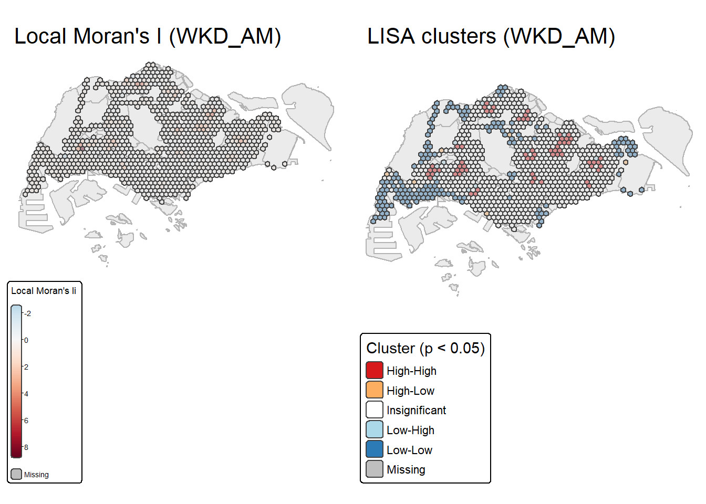
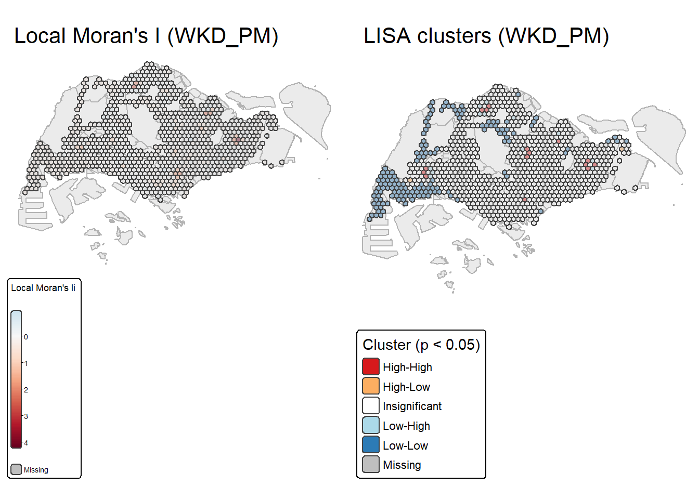
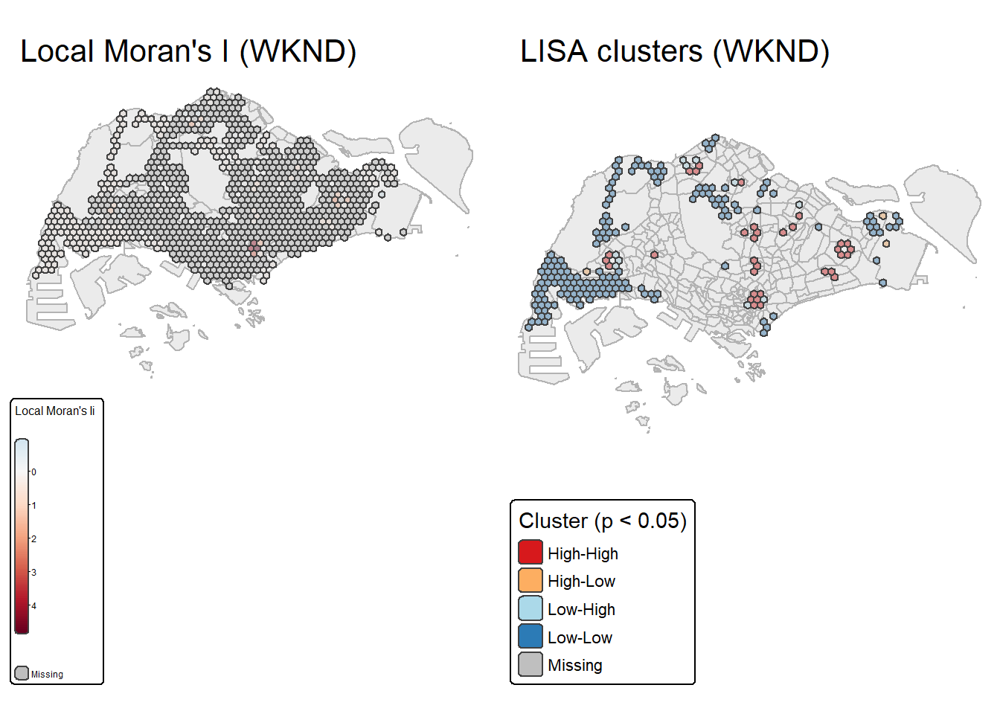
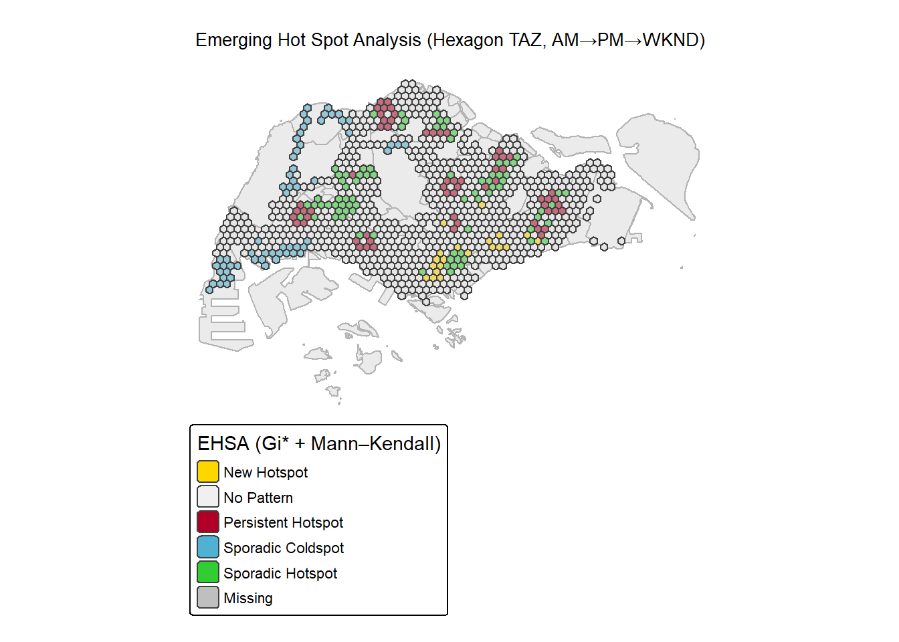
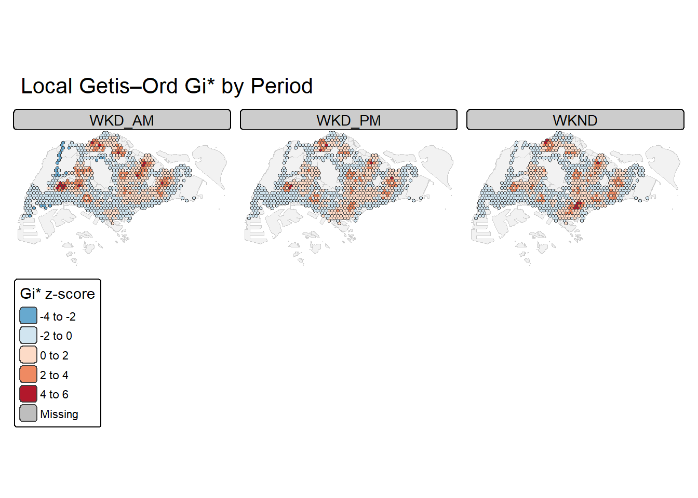

pacman::p_load(sf, sfdep, tidyverse, tmap, lubridate, readr, readxl, mapview,rvest, knitr,Kendall)Take Home Exercise 2
1 Overview
Singapore’s bus network forms the backbone of daily urban mobility, linking residential, commercial, and industrial zones across the island. Traditional ridership mapping shows overall volumes but misses the localised spatial structure of passenger demand. This study applies Local Moran’s I and Emerging Hot Spot Analysis (EHSA) to uncover spatial and temporal clustering patterns in bus trips using LTA DataMall Passenger Volume by Origin–Destination data.
A 375 m hexagonal grid is used as traffic analysis zones (TAZ), and passenger trips are aggregated by origin for Weekday AM (6–9 a.m.), Weekday PM (5–8 p.m.), and Weekend/Holiday (11 a.m.–8 p.m.) periods. Local Moran’s I identifies significant hotspots and coldspots of passenger activity (p < 0.05), while EHSA combines Gi* with the Mann–Kendall test to detect evolving trends such as new, intensifying, or persistent hotspots. The results offer insights for bus service planning, demand management, and equitable transport accessibility across Singapore.
2 Getting Started
2.1 The Packages
2.2 The Packages
In this exercise, several R packages are used to support spatial data handling, statistical analysis, and geovisualisation.
| Package | Description |
|---|---|
| sf | Provides tools for importing, managing, and manipulating spatial (simple feature) objects. |
| sfdep | Extends sf to perform spatial dependency and spatial autocorrelation analyses, including Local Moran’s I and EHSA. |
| tidyverse | A collection of R packages for data wrangling, transformation, and visualisation (e.g., dplyr, ggplot2, readr, tidyr). |
| tmap | Produces high-quality static and interactive thematic maps for spatial analysis. |
| lubridate | Simplifies working with date and time variables for extracting time periods. |
| readr / readxl | Used for importing aspatial datasets such as bus passenger volumes. |
| mapview (optional) | Enables quick interactive map previews during data checking. |
We will load these packages using pacman::p_load() to streamline installation and loading:
2.3 The Data
This study integrates both aspatial (tabular) and geospatial datasets from public data sources to analyse bus passenger flows in Singapore.
| Dataset | Description | Format | Source |
|---|---|---|---|
| Passenger Volume by Origin–Destination (Bus Stops) | Monthly dataset recording the number of passenger trips between origin and destination bus stops. The PT_TYPE column is filtered for “BUS”, and the TIME_PER_HOUR field is used to extract weekday AM, PM, and weekend periods. |
CSV | LTA DataMall |
| Bus Stop Locations | Contains geolocation and metadata for all operational bus stops in Singapore, including stop codes, names, and coordinates (WGS84). | CSV | LTA DataMall |
| Master Plan 2019 Subzone Boundary (No Sea) | Provides subzone polygons representing Singapore’s urban planning regions, used for reference mapping and aggregation validation. | GeoJSON / Shapefile | data.gov.sg |
3 Importing data
3.1 BusStop Location data
The following code helps in importing Bus Stop Location shapefile downloaded from LTA DataMall into R environment.
BusStop = st_read(dsn = "data/geospatial/BusStopLocation_Aug2025",layer="BusStop") %>%
st_transform(crs = 3414)Reading layer `BusStop' from data source
`C:\govanzz\ISSS626_GEO_AUG_2025\Take_Home_Exercise\Take_Home_Ex02\data\geospatial\BusStopLocation_Aug2025'
using driver `ESRI Shapefile'
Simple feature collection with 5172 features and 2 fields
Geometry type: POINT
Dimension: XY
Bounding box: xmin: 3970.122 ymin: 26482.1 xmax: 48285.52 ymax: 52983.82
Projected CRS: SVY213.2 Loading Master Plan 2019 Subzone Boundary (No Sea)
The following code chunk helps us to import Master Plan 2019 Subzone Boundary (No Sea) from Singapore’s open data portal into R environment.
mpsz <- st_read("data/geospatial/MasterPlan2019SubzoneBoundaryNoSeaKML.kml")Reading layer `URA_MP19_SUBZONE_NO_SEA_PL' from data source
`C:\govanzz\ISSS626_GEO_AUG_2025\Take_Home_Exercise\Take_Home_Ex02\data\geospatial\MasterPlan2019SubzoneBoundaryNoSeaKML.kml'
using driver `KML'
Simple feature collection with 332 features and 2 fields
Geometry type: MULTIPOLYGON
Dimension: XY
Bounding box: xmin: 103.6057 ymin: 1.158699 xmax: 104.0885 ymax: 1.470775
Geodetic CRS: WGS 843.3 Loading the Passenger Volumn By origin Destination Bus Stops
The following code helps us importing Passenger Volume by Origin Destination Bus Stops downloaded from LTA DataMall into R environment.
odbus <- read_csv("data/aspatial/origin_destination_bus_202508.csv")4 Data Wrangling
4.1 MPSZ data
The code chunk below extracts attribute values that are embedded as HTML tables inside the KML’s Description field. Many government KML files store attributes in HTML form rather than as clean columns.
The function: - Parses the HTML text using read_html(). - Looks for rows where the (table header) equals the desired field name (e.g., “REGION_N”). - Extracts the correspondingcell value (the actual data). - Returns the text value or NA if not found.
This converts messy, nested HTML metadata into usable plain-text attributes.
extract_kml_field <- function(html_text, field_name) {
if (is.na(html_text) || html_text == "") return(NA_character_)
page <- read_html(html_text)
rows <- page %>% html_elements("tr")
value <- rows %>%
keep(~ html_text2(html_element(.x, "th")) == field_name) %>%
html_element("td") %>%
html_text2()
if (length(value) == 0) NA_character_ else value
}The code chunk below applies extract_kml_field() to each feature’s Description field to extract four important attributes: - REGION_N → Region name (e.g., “CENTRAL REGION”) - PLN_AREA_N → Planning area name (e.g., “TAMPINES”) - SUBZONE_N → Subzone name (e.g., “TAMPINES WEST”) - SUBZONE_C → Subzone code (short unique identifier) Each attribute is stored as a new text column in the mpsz data frame. The use of map_chr() ensures that the results are character vectors rather than lists.
mpsz <- mpsz %>%
mutate(
REGION_N = map_chr(Description, extract_kml_field, "REGION_N"),
PLN_AREA_N = map_chr(Description, extract_kml_field, "PLN_AREA_N"),
SUBZONE_N = map_chr(Description, extract_kml_field, "SUBZONE_N"),
SUBZONE_C = map_chr(Description, extract_kml_field, "SUBZONE_C")
) %>%
select(-Name, -Description) %>%
relocate(geometry, .after = last_col())mpszSimple feature collection with 332 features and 4 fields
Geometry type: MULTIPOLYGON
Dimension: XY
Bounding box: xmin: 103.6057 ymin: 1.158699 xmax: 104.0885 ymax: 1.470775
Geodetic CRS: WGS 84
First 10 features:
REGION_N PLN_AREA_N SUBZONE_N SUBZONE_C
1 CENTRAL REGION BUKIT MERAH DEPOT ROAD BMSZ12
2 CENTRAL REGION BUKIT MERAH BUKIT MERAH BMSZ02
3 CENTRAL REGION OUTRAM CHINATOWN OTSZ03
4 CENTRAL REGION DOWNTOWN CORE PHILLIP DTSZ04
5 CENTRAL REGION DOWNTOWN CORE RAFFLES PLACE DTSZ05
6 CENTRAL REGION OUTRAM CHINA SQUARE OTSZ04
7 CENTRAL REGION BUKIT MERAH TIONG BAHRU BMSZ10
8 CENTRAL REGION DOWNTOWN CORE BAYFRONT SUBZONE DTSZ12
9 CENTRAL REGION BUKIT MERAH TIONG BAHRU STATION BMSZ04
10 CENTRAL REGION DOWNTOWN CORE CLIFFORD PIER DTSZ06
geometry
1 MULTIPOLYGON (((103.8145 1....
2 MULTIPOLYGON (((103.8221 1....
3 MULTIPOLYGON (((103.8438 1....
4 MULTIPOLYGON (((103.8496 1....
5 MULTIPOLYGON (((103.8525 1....
6 MULTIPOLYGON (((103.8486 1....
7 MULTIPOLYGON (((103.8311 1....
8 MULTIPOLYGON (((103.8589 1....
9 MULTIPOLYGON (((103.8283 1....
10 MULTIPOLYGON (((103.8552 1....Transforming into CRS 3414
mpsz <- st_transform(mpsz,
crs = 3414)
mpszSimple feature collection with 332 features and 4 fields
Geometry type: MULTIPOLYGON
Dimension: XY
Bounding box: xmin: 2667.538 ymin: 15748.72 xmax: 56396.44 ymax: 50256.33
Projected CRS: SVY21 / Singapore TM
First 10 features:
REGION_N PLN_AREA_N SUBZONE_N SUBZONE_C
1 CENTRAL REGION BUKIT MERAH DEPOT ROAD BMSZ12
2 CENTRAL REGION BUKIT MERAH BUKIT MERAH BMSZ02
3 CENTRAL REGION OUTRAM CHINATOWN OTSZ03
4 CENTRAL REGION DOWNTOWN CORE PHILLIP DTSZ04
5 CENTRAL REGION DOWNTOWN CORE RAFFLES PLACE DTSZ05
6 CENTRAL REGION OUTRAM CHINA SQUARE OTSZ04
7 CENTRAL REGION BUKIT MERAH TIONG BAHRU BMSZ10
8 CENTRAL REGION DOWNTOWN CORE BAYFRONT SUBZONE DTSZ12
9 CENTRAL REGION BUKIT MERAH TIONG BAHRU STATION BMSZ04
10 CENTRAL REGION DOWNTOWN CORE CLIFFORD PIER DTSZ06
geometry
1 MULTIPOLYGON (((25910.34 29...
2 MULTIPOLYGON (((26750.09 29...
3 MULTIPOLYGON (((29161.2 297...
4 MULTIPOLYGON (((29814.11 29...
5 MULTIPOLYGON (((30137.77 29...
6 MULTIPOLYGON (((29699.44 29...
7 MULTIPOLYGON (((27748.04 29...
8 MULTIPOLYGON (((30844.87 29...
9 MULTIPOLYGON (((27444.04 29...
10 MULTIPOLYGON (((30436.73 29...4.2 BusStop data
In the code chunk below plots polygon boundaries from the mpsz shapefile (e.g., planning subzones) and overlays bus stop point locations from the BusStop dataset as dots. This creates a map showing where bus stops are situated within each subzone.
tm_shape(mpsz) + tm_polygons() + tm_shape(BusStop) + tm_dots()
The plot shows a few bus stops appearing outside Singapore’s boundary. These correspond to cross-border routes extending into Johor Bahru.
4.2.1 Extracting Bus Stops located within Singapore
In the code chunk below, st_join() of sf package is used to select all bus stops located within Singapore main island.
BusStop_in_SG <- st_join(
BusStop, mpsz,
join = st_within,
left = FALSE)
tm_shape(mpsz)+ tm_polygons()+ tm_shape(BusStop_in_SG)+ tm_dots()
We can find that all bus stops are within Singapore
4.3 Derving Analytical Hexagon
Hexagons reduce sampling bias due to edge effects of the grid shape, this is related to the low perimeter-to-area ratio of the shape of the hexagon. A circle has the lowest ratio but cannot tessellate to form a continuous grid. Hexagons are the most circular-shaped polygon that can tessellate to form an evenly spaced grid.
In the code chunk below, st_make_grid() of sf package is used to create the hexagon data set. This resolution (750 m cell size) balances spatial granularity and computational feasibility, aligning with prior research on urban transport density mapping.
hexagon <- st_make_grid(mpsz,
cellsize = 750,
what = "polygon",
square = FALSE
) %>%
st_sf()tmap_mode("plot")
tm_shape(hexagon) +
tm_polygons(col = "lightgrey", border.col = "white", lwd = 0.5, alpha = 0.5) +
tm_shape(mpsz) +
tm_polygons(col = "lightgreen", border.col = "darkgreen", alpha = 0.6) +
tm_layout(
title = "Analytical hexagon layer overplot on Singapore",
frame = TRUE,
legend.outside = FALSE,
title.position = c("center", "top")
) +
tm_compass(type = "8star", position = c("right", "bottom")) +
tm_scale_bar(position = c("left", "bottom"))
Now we only want to select hexagons with bus stops
The code chunk below eliminates hexagons without bus stops from the initial hexagon layer.
It consists of three steps:
- A new field called
busstop_countis created.
st_intersects()is used to flag bus stops located inside each hexagon. Then,length()is used to count the number of bus stops within each hexagon.
- Lastly,
filter()is used to select hexagons with at least one bus stop found.
hexagon$busstop_count =
lengths(st_intersects(
hexagon, BusStop_in_SG))
hexagon <- filter(
hexagon, busstop_count > 0)tmap_mode("plot")
tm_shape(mpsz) +
tm_polygons(col = "lightgreen", alpha = 0.3, border.col = "darkgreen", lwd = 0.5) +
tm_shape(hexagon) +
tm_polygons(col = "grey85", border.col = "white", lwd = 0.2) +
tm_shape(BusStop_in_SG) +
tm_dots(size = 0.02, col = "black", alpha = 0.7) +
tm_layout(
title = "Hexagons containing at least one bus stop (375 m TAZ)",
frame = FALSE,
legend.show = FALSE,
bg.color = "white",
title.position = c("center", "top")
) +
tm_scale_bar(position = c("left", "bottom")) +
tm_compass(type = "8star", position = c("right", "bottom"), size = 2)
The analytical hexagon layer (375 m apothem) shows complete coverage of built-up areas across Singapore, with dense concentrations in the east and central corridors. Hexagons with zero bus stops are excluded to ensure spatial analysis focuses on active passenger zones.
4.3.1 Assigning Id to each hexagon
In the code chunk below select() is used to drop busstop_count field from the sf data frame. A new feld called HEX_ID is created. Then, sprintf(), seq_len() and nrow() are used to insert sequential ID values with a character H in front. as.factor() is used to convert the values into factor data type.
hexagon <- hexagon %>%
select(, -busstop_count)
hexagon$HEX_ID <- sprintf(
"H%04d", seq_len(
nrow(hexagon))) %>%
as.factor()4.4 Preparing Trip generation Data
The code chunk below prepares and cleans the bus trip data for further analysis:
- The dataset
odbusis piped into a sequence of data transformations.
select()keeps only the relevant columns:ORIGIN_PT_CODE,DAY_TYPE,TIME_PER_HOUR, andTOTAL_TRIPS.
- The
rename()functions are used to give the columns more meaningful names:ORIGIN_PT_CODE→BUS_STOP_N
TIME_PER_HOUR→HOUR_OF_DAY
TOTAL_TRIPS→TRIPS
- The column
BUS_STOP_Nis then converted into a factor variable usingas.factor(), indicating that bus stop codes are categorical data.
trips <- odbus %>%
select(c(ORIGIN_PT_CODE, DAY_TYPE, TIME_PER_HOUR, TOTAL_TRIPS)) %>%
rename(BUS_STOP_N = ORIGIN_PT_CODE) %>%
rename(HOUR_OF_DAY = TIME_PER_HOUR) %>%
rename(TRIPS = TOTAL_TRIPS)
trips$BUS_STOP_N <- as.factor(trips$BUS_STOP_N)4.4.1 Populating Hexagon IDs into BusStop data frame
Before we can aggregate trips generate at bus stops onto hexagon level, we need to populate the hexagon ids in hexagon data frame into BusStop data frame.
The code chunk below identifies which bus stops fall inside each hexagon and creates a simplified table:
st_intersection(BusStop, hexagon)performs a spatial intersection to find the bus stops located within each hexagon.
st_drop_geometry()removes the spatial geometry, keeping only the attribute data.
select(c(BUS_STOP_N, HEX_ID))keeps only two columns — the bus stop ID (BUS_STOP_N) and the corresponding hexagon ID (HEX_ID), linking each bus stop to its hexagon.
bs_hex <- st_intersection(
BusStop_in_SG, hexagon) %>%
st_drop_geometry() %>%
select(c(BUS_STOP_N, HEX_ID))4.4.2 Adding HEX_ID into bus trips data
To derive the hourly number of bus trips per hexagon, we need to add HEX_ID to trips data. By doing so, we will be able to aswer location questions such as how many bus trip originate from a certain hexagon?
In the code chunk below inner_join() is used to join the trips data with bs_hex.
trips <- inner_join(trips, bs_hex)4.4.3 Aggregating TRIPS based on HEX_ID
In the code chunk below, group_by() and summarise() is used to aggregate TRIPS by HEX_ID, DAY_TYPE and HOUR_OF_DAY.
trips <- trips %>%
group_by(
HEX_ID,
DAY_TYPE,
HOUR_OF_DAY) %>%
summarise(TRIPS = sum(TRIPS))4.4.4 Build analysis periods (AM / PM / Weekend) and aggregate
The code chunk below prepares and aggregates bus trip data by time period and spatial hexagon for visualization and spatial analysis. It consists of four main steps.
First, a list of weekend labels (wknd_labels) is defined to identify weekend or public holiday days.
The mutate() function converts HOUR_OF_DAY to integer format and creates two new variables:
- IS_WEEKEND: Flags whether the trip occurred on a weekend or public holiday.
- PERIOD: Categorizes trips into time periods: - WKD_AM – Weekday morning (06:00–09:00)
- WKD_PM – Weekday evening (17:00–20:00)
- WKND – Weekend or public holiday (11:00–20:00)
Rows with undefined PERIOD values are removed using filter(!is.na(PERIOD)).
Next, the data is grouped by HEX_ID (spatial hexagon) and PERIOD (time category).
For each combination, total trips are summed using summarise(TRIPS = sum(TRIPS)).
Then, all possible combinations of HEX_ID and PERIOD are generated to ensure no missing data.
all_hex extracts all unique hexagon IDs, and all_periods lists the three time categories (WKD_AM, WKD_PM, WKND).
crossing() ensures every hexagon is paired with every period.
left_join() merges this with the aggregated data, while replace_na(TRIPS, 0L) fills missing combinations with zeros to avoid map gaps.
Finally, the hexagon geometry is reattached to the aggregated trip data by joining on HEX_ID.
The resulting spatial object hex_period_sf contains both geometry and trip counts, ready for mapping and spatial analysis.
wknd_labels <- c("SATURDAY", "SUNDAY/PH", "WEEKENDS/HOLIDAY", "SUNDAY", "PH")
trips <- trips %>%
mutate(
HOUR_OF_DAY = as.integer(HOUR_OF_DAY),
IS_WEEKEND = DAY_TYPE %in% wknd_labels,
PERIOD = case_when(
!IS_WEEKEND & HOUR_OF_DAY %in% 6:8 ~ "WKD_AM", # 06:00–09:00
!IS_WEEKEND & HOUR_OF_DAY %in% 17:19 ~ "WKD_PM", # 17:00–20:00
IS_WEEKEND & HOUR_OF_DAY %in% 11:20 ~ "WKND", # 11:00–20:00
TRUE ~ NA_character_
)
) %>%
filter(!is.na(PERIOD))
hex_period <- trips %>%
group_by(HEX_ID, PERIOD) %>%
summarise(TRIPS = sum(TRIPS), .groups = "drop")
all_hex <- hexagon %>% st_drop_geometry() %>% distinct(HEX_ID)
all_periods <- tibble(PERIOD = c("WKD_AM","WKD_PM","WKND"))
hex_period <- all_hex %>%
crossing(all_periods) %>%
left_join(hex_period, by = c("HEX_ID","PERIOD")) %>%
mutate(TRIPS = replace_na(TRIPS, 0L))
hex_period_sf <- hexagon %>%
select(HEX_ID) %>%
left_join(hex_period, by = "HEX_ID")trips# A tibble: 13,060 × 6
# Groups: HEX_ID, DAY_TYPE [1,640]
HEX_ID DAY_TYPE HOUR_OF_DAY TRIPS IS_WEEKEND PERIOD
<fct> <chr> <int> <dbl> <lgl> <chr>
1 H0001 WEEKDAY 6 120 FALSE WKD_AM
2 H0001 WEEKDAY 7 111 FALSE WKD_AM
3 H0001 WEEKDAY 8 77 FALSE WKD_AM
4 H0001 WEEKDAY 17 255 FALSE WKD_PM
5 H0001 WEEKDAY 18 328 FALSE WKD_PM
6 H0001 WEEKDAY 19 266 FALSE WKD_PM
7 H0001 WEEKENDS/HOLIDAY 11 130 TRUE WKND
8 H0001 WEEKENDS/HOLIDAY 12 105 TRUE WKND
9 H0001 WEEKENDS/HOLIDAY 13 105 TRUE WKND
10 H0001 WEEKENDS/HOLIDAY 14 115 TRUE WKND
# ℹ 13,050 more rows5 Neighbours and weights (KNN on hex centroids)
The below code constructs spatial neighbor relationships and corresponding weights for hexagonal polygons, which are essential for spatial autocorrelation analysis.
First, st_centroid(hexagon) creates the centroid (geometric center point) of each hexagon. These centroids are used to determine spatial proximity between hexagons.
Next, st_knn(hex_cent, k = 8) computes the k-nearest neighbors for each centroid, where k = 8 ensures each hexagon is connected to its eight closest neighbors — a typical choice for regular hexagonal grids to maintain stability.
Then, st_inverse_distance(nb_knn, hex_cent, scale = 1, alpha = 1) calculates inverse-distance weights, assigning higher weights to closer neighbors and lower weights to distant ones.
Each weight vector is then row-standardized with purrr::map(wt_idw, ~ .x / sum(.x)) so that the weights for each hexagon sum to 1.
Finally, the neighbor list (nb_knn) and standardized weights (wt_rowstd) are added to the hexagon spatial dataframe using mutate(), creating a new object hex_weights that stores both spatial geometry and spatial relationships for later use.
# Create centroids (points) for neighbor computation
hex_cent <- st_centroid(hexagon)
# 6–8 neighbors is typical for regular hex grids; choose 8 for stability
nb_knn <- st_knn(hex_cent, k = 8)
# Row-standardized inverse-distance weights (and avoid self-neighbor)
wt_idw <- st_inverse_distance(nb_knn, hex_cent, scale = 1, alpha = 1)
# normalize each weight vector to sum to 1
wt_rowstd <- purrr::map(wt_idw, ~ .x / sum(.x))
# Store neighbors and weights with the hex geometry for reuse
hex_weights <- hexagon %>%
mutate(nb = nb_knn,
wt = wt_rowstd)6 Local Indicators of Spatial Association (LISA) Analysis
Local Moran’s I (LMSA) for each period
This code chunk defines and executes a function run_lisa_period() to perform Local Moran’s I analysis on bus trip data for a selected time period (e.g., WKD_AM, WKD_PM, or WKND).
It identifies spatial clusters such as High-High, Low-Low, High-Low, and Low-High areas and visualizes them through two side-by-side maps.
1. Function Definition and Input - The function takes two parameters: - period_label: a string indicating which time period to analyze (e.g., “WKD_AM”). - background: a polygon layer (default: mpsz) used as the map backdrop. - The relevant records from hex_period_sf are filtered by PERIOD, and neighborhood-weight information from hex_weights is joined by HEX_ID.
2. LISA Calculation - A random seed (set.seed(123)) ensures reproducibility.
- The Local Moran’s I statistic is computed for each hexagon using sfdep::local_moran(TRIPS, nb, wt).
- The results are expanded with unnest() and additional classification columns are created: - SIG: Flags statistically significant results (p_ii_sim < 0.05). - QUADRANT: Categorizes each hexagon based on local spatial association: - High-High: High trip counts surrounded by high values (hotspot). - Low-Low: Low trip counts surrounded by low values (cold spot). - High-Low: High value surrounded by low values (spatial outlier). - Low-High: Low value surrounded by high values (spatial outlier). - Insignificant: Not statistically significant. - Missing: Cases without sufficient data.
3. Color Palette Definition A custom color palette is created for the LISA map:
- High-High → #d7191c (red)
- High-Low → #fdae61 (orange)
- Low-High → #abd9e9 (light blue)
- Low-Low → #2c7bb6 (dark blue)
- Insignificant → #FFFFFF (white)
- Missing → #FFFF00 (yellow)
4. Map Generation The function switches tmap to plot mode using tmap_mode("plot") and creates two maps side-by-side:
Left Map (
map_stat):
Displays the Local Moran’s I statistic (ii) using a diverging color palette (-RdBu), where red and blue indicate opposite directions of spatial autocorrelation.Right Map (
map_cluster):
Shows the LISA cluster types (QUADRANT) using the custom color palette defined earlier.
Both maps use the mpsz layer as a background and apply consistent styling for borders and titles.
5. Output Finally, the two maps are arranged horizontally with tmap_arrange(map_stat, map_cluster, ncol = 2).
Calling run_lisa_period("WKD_AM") runs the analysis for weekday morning (AM) trips and generates both the Local Moran’s I map and the LISA cluster map for visual interpretation of spatial patterns in bus trip intensity.
run_lisa_period <- function(period_label, background = mpsz) {
df <- hex_period_sf %>%
dplyr::filter(PERIOD == period_label) %>%
dplyr::left_join(hex_weights %>% st_drop_geometry(), by = "HEX_ID")
set.seed(123)
lisa <- df %>%
dplyr::mutate(local_moran = sfdep::local_moran(TRIPS, nb, wt), .before = 1) %>%
tidyr::unnest(local_moran) %>%
dplyr::mutate(
SIG = p_ii_sim < 0.05,
QUADRANT = dplyr::case_when(
!SIG ~ "Insignificant",
mean == "High-High" ~ "High-High",
mean == "Low-Low" ~ "Low-Low",
mean == "High-Low" ~ "High-Low",
mean == "Low-High" ~ "Low-High",
TRUE ~ NA_character_
),
QUADRANT = tidyr::replace_na(QUADRANT, "Missing")
)
# Palette only for significant classes (optional but cleaner)
pal <- c(
"High-High" = "#d7191c",
"High-Low" = "#fdae61",
"Low-High" = "#abd9e9",
"Low-Low" = "#2c7bb6"
)
# --- significance filtering / masking
lisa_sig <- dplyr::filter(lisa, SIG)
lisa_for_stat <- dplyr::mutate(lisa, ii_sig = ifelse(SIG, ii, NA_real_))
tmap_mode("plot") # <-- ensure plot mode
# Left: Local Moran's Ii (masked to significant only)
map_stat <-
tm_shape(background) +
tm_polygons(col = "grey92", border.col = "grey70", alpha = 1) +
tm_shape(lisa_for_stat) +
tm_polygons("ii_sig", style = "cont", midpoint = 0,
palette = "-RdBu", title = "Local Moran's Ii",
legend.show = TRUE, id = "HEX_ID") + # (id harmless in plot mode)
tm_borders(alpha = .6) +
tm_layout(main.title = paste0("Local Moran's I (", period_label, ")"),
frame = FALSE)
# Right: significant clusters only
map_cluster <-
tm_shape(background) +
tm_polygons(col = "grey92", border.col = "grey70", alpha = 1) +
tm_shape(lisa_sig) +
tm_polygons("QUADRANT", palette = pal, title = "Cluster (p < 0.05)",
drop.levels = TRUE) +
tm_borders(alpha = .6) +
tm_layout(main.title = paste0("LISA clusters (", period_label, ")"),
frame = FALSE)
tmap_arrange(map_stat, map_cluster, ncol = 2) # <-- return both maps
}
run_lisa_period("WKD_AM")
# run_lisa_period("WKD_PM")
# run_lisa_period("WKND")The weekday morning peak (6 – 9 a.m.) pattern shows strong spatial clustering of bus trip generation across Singapore. The Local Moran’s I map indicates clear positive spatial autocorrelation, with elevated Ii values concentrated in the eastern and central corridors. These areas coincide with high-density residential towns such as Tampines, Bedok, and Punggol, where commuter outflows toward employment centers are most intense. The LISA cluster map further confirms several High-High hotspots, representing zones of consistently high ridership surrounded by similar high-volume neighbors.
In contrast, Low-Low coldspots are found mainly in the western industrial and northern fringe zones (e.g., Tuas, Lim Chu Kang), where population density and passenger activity are low. A few High-Low outliers appear near the Central Business District, reflecting localized nodes of heavy ridership adjacent to moderate or low-demand areas, such as transport interchanges or mixed-use developments.
Overall, the weekday AM distribution reflects Singapore’s directional commuting pattern from residential east to central employment hubs. The significant p < 0.05 clustering confirms that morning ridership is not randomly distributed, but shaped by strong spatial dependence between adjacent high-trip hexagons, underscoring the concentrated nature of peak-hour bus demand.
run_lisa_period("WKD_PM")
The evening peak period (5–8 p.m.) reveals a more spatially dispersed pattern of bus trip generation compared to the concentrated morning clusters. The Local Moran’s I map shows moderate positive spatial autocorrelation, indicating that while clustering still exists, the magnitude of spatial dependence has weakened relative to the morning commute.
The LISA cluster map identifies High-High hotspots mainly in the eastern and central planning areas, including Bedok, Tampines, Hougang, and Toa Payoh, representing strong evening return flows as commuters travel back toward residential estates. Smaller hotspots emerge around Jurong East and Clementi, reflecting local employment or educational hubs with high outbound ridership.
Conversely, Low-Low coldspots remain in the western industrial and northern regions (e.g., Tuas, Lim Chu Kang), consistent with low residential density and limited evening ridership. A few High-Low outliers appear near major interchanges such as HarbourFront and Serangoon, suggesting localized high-volume nodes surrounded by moderate-activity zones.
Overall, the weekday PM pattern illustrates Singapore’s home-bound commuting structure. While morning trips converge toward the city, evening flows disperse back to suburban areas, sustaining statistically significant (p < 0.05) but weaker spatial clustering across the island.
run_lisa_period("WKND")
The weekend and public holiday pattern displays a more dispersed and recreationally oriented distribution of bus trip generation across Singapore. The Local Moran’s I map shows generally lower Ii values than weekday peaks, indicating weaker overall spatial autocorrelation. However, significant clusters remain observable, particularly in areas of concentrated leisure or retail activity.
The LISA cluster map highlights High-High hotspots across the eastern coastal belt (e.g., Bedok, Pasir Ris, and Tampines) and central leisure zones such as Orchard, Bugis, and Marina Bay, reflecting weekend trips to shopping, entertainment, and recreational destinations. Smaller hotspots appear in the western suburbs, notably Jurong East and Clementi, corresponding to major malls and transit interchanges.
In contrast, Low-Low coldspots dominate the northern rural and industrial fringes (e.g., Lim Chu Kang, Seletar, Tuas), where ridership remains consistently low. The more fragmented spatial clustering pattern suggests a shift from structured work commuting to discretionary leisure and family travel.
Overall, weekend mobility patterns are less spatially clustered but still exhibit localized concentrations of activity near key retail and recreation nodes, confirming a statistically significant but weaker form of spatial dependence (p < 0.05) driven by non-commuting travel behavior.
7 Emerging Hot Spot Analysis (EHSA)
The code below converts the PERIOD column in the hex_period_sf dataset into a categorical variable (factor) with a defined order of levels.
- The
mutate()function is used to modify the existing datasethex_period_sf.
- The
PERIODvariable is converted into a factor usingfactor().
- The
levelsargument explicitly sets the desired order of categories as"WKD_AM","WKD_PM", and"WKND".
This ensures that when plotting or summarizing data, the periods will appear in a consistent and logical order: weekday morning → weekday evening → weekend.
hex_period_sf <- hex_period_sf %>%
mutate(PERIOD = factor(PERIOD, levels = c("WKD_AM","WKD_PM","WKND")))Build a stable base index for HEX_IDs (to keep neighbor order consistent)
hex_base <- hexagon %>%
st_as_sf() %>%
mutate(.idx = row_number()) %>%
select(HEX_ID, .idx, geometry)Centroids and kNN neighbors (k=8 typical for hex grids)
hex_cent <- st_centroid(hex_base)
coords <- st_coordinates(hex_cent)
knn_obj <- spdep::knearneigh(coords, k = 8)
nb_obj <- spdep::knn2nb(knn_obj)
lw_obj <- spdep::nb2listw(nb_obj, style = "W") # row-standardized weights7.1 EHSA 2 — Local Gi* (per period) and significance
This section performs the Local Gi* (Getis-Ord Gi*) analysis to identify statistically significant hotspots and coldspots of bus trip intensity for each time period (PERIOD).
.z_to_sig <- function(z, alpha = 0.05) {
thr <- qnorm(1 - alpha/2) # 1.96 for alpha=0.05
case_when(
z >= thr ~ 1L, # hotspot
z <= -thr ~ -1L, # coldspot
TRUE ~ 0L # not significant
)
}For each PERIOD: align to hex_base order, fill missing TRIPS with 0, run localG
The code below performs the Local Gi* (Getis-Ord) hotspot analysis for each time period (PERIOD) to identify areas with significantly high or low bus trip activity.
- The dataset
hex_period_sfis used as input, and the geometry is removed usingst_drop_geometry()since only attribute data is required for computation.
- A
right_join()aligns the trip data with a base hexagon layer (hex_base), ensuring all hexagons are included — even those with missing trip data.
- The data is arranged by
PERIODand index (.idx) for consistent ordering.
mutate(TRIPS = replace_na(TRIPS, 0))fills missing trip values with zeros to avoid calculation errors.
- The dataset is grouped by
PERIOD, meaning the hotspot analysis is performed separately for each time period.
- Within each group,
spdep::localG()calculates the Local Gi* z-scores based on the number of trips (TRIPS) and the spatial weights object (lw_obj).
- The resulting z-scores are classified for statistical significance using the helper function
.z_to_sig().
- The results are stored in a tibble containing the original attributes, computed z-scores (
z), and significance category (sig).
- After ungrouping, only relevant columns —
HEX_ID,PERIOD,.idx,TRIPS,z, andsig— are retained.
In summary:
This code computes the Local Gi* statistic for each hexagon across different time periods, identifying hotspots (high z-scores) and coldspots (low z-scores) based on the spatial distribution of bus trips.
gi_by_period <- hex_period_sf %>%
st_drop_geometry() %>%
right_join(hex_base %>% st_drop_geometry(), by = "HEX_ID") %>%
arrange(PERIOD, .idx) %>%
mutate(TRIPS = replace_na(TRIPS, 0)) %>%
group_by(PERIOD) %>%
group_modify(~{
z <- as.numeric(spdep::localG(.x$TRIPS, lw_obj))
tibble(.x, z = z, sig = .z_to_sig(z, alpha = 0.05))
}) %>%
ungroup() %>%
select(HEX_ID, PERIOD, .idx, TRIPS, z, sig)7.2 Mann–Kendall trend & category assignment
This code performs the Mann–Kendall trend test on the Local Gi* z-scores for each hexagon to detect temporal trends in hotspot and coldspot patterns over multiple periods.
- The dataset
gi_by_period(containing Local Gi* z-scores per hexagon and period) is arranged byHEX_IDandPERIODto ensure chronological order.
- The data is grouped by
HEX_ID, so trend analysis is conducted individually for each hexagon across time.
- The
summarise()function computes several key statistics for each hexagon:mk_tau: The Kendall’s tau statistic fromKendall::MannKendall(z), indicating the direction and strength of the trend:- Positive → increasing trend
- Negative → decreasing trend
- Near zero → no trend
- Positive → increasing trend
mk_p: The p-value of the test, assessing whether the trend is statistically significant.
latest_z: The most recent z-score (z) value for that hexagon.
latest_sig: The most recent significance classification (sig) value.
hot_count: The total number of times the hexagon was identified as a hotspot (sig == 1L).
cold_count: The total number of times it was identified as a coldspot (sig == -1L).
- The argument
.groups = "drop"ensures that the grouped data is flattened after summarization.
In summary:
This code evaluates whether each hexagon’s Local Gi* values show a statistically significant increasing or decreasing trend over time.
It produces a summary table (mk_trends) containing the Mann–Kendall statistics (mk_tau, mk_p), recent z-scores, and counts of hotspot or coldspot occurrences — which are later used for spatiotemporal hotspot classification in the EHSA (Emerging Hot Spot Analysis) framework.
mk_trends <- gi_by_period %>%
arrange(HEX_ID, PERIOD) %>%
group_by(HEX_ID) %>%
summarise(
mk_tau = Kendall::MannKendall(z)$tau %>% as.numeric(),
mk_p = Kendall::MannKendall(z)$sl %>% as.numeric(),
latest_z = z[dplyr::n()],
latest_sig = sig[dplyr::n()],
hot_count = sum(sig == 1L, na.rm = TRUE),
cold_count = sum(sig == -1L, na.rm = TRUE),
.groups = "drop"
)EHSA rule-set (compact, robust for 3 time-slices)
This function defines the rule-set for classifying Emerging Hot Spot Analysis (EHSA) categories based on spatial and temporal trends.
It integrates both spatial significance (hotspot or coldspot status) and temporal trends (from the Mann–Kendall test).
Function: classify_ehsa(latest_sig, hot_count, cold_count, mk_tau, mk_p, alpha = 0.05)
- No Pattern Check
- If there are no significant hotspot or coldspot occurrences (
hot_count + cold_count == 0),
→ returns"No Pattern".
- If there are no significant hotspot or coldspot occurrences (
- Persistent Patterns
- If all three time slices are significant hotspots →
"Persistent Hotspot".
- If all three are significant coldspots →
"Persistent Coldspot".
- If all three time slices are significant hotspots →
- Latest Slice = Hotspot (
latest_sig == 1L)- If Mann–Kendall test is significant (
mk_p < alpha):- Positive trend (
mk_tau > 0) →"Intensifying Hotspot".
- Negative trend (
mk_tau < 0) →"Diminishing Hotspot".
- Positive trend (
- If only one slice shows a hotspot →
"New Hotspot".
- Otherwise →
"Sporadic Hotspot".
- If Mann–Kendall test is significant (
- Latest Slice = Coldspot (
latest_sig == -1L)- If Mann–Kendall test is significant (
mk_p < alpha):- Negative trend (
mk_tau < 0) →"Intensifying Coldspot".
- Positive trend (
mk_tau > 0) →"Diminishing Coldspot".
- Negative trend (
- If only one slice shows a coldspot →
"New Coldspot".
- Otherwise →
"Sporadic Coldspot".
- If Mann–Kendall test is significant (
- Non-significant Latest Slice with Past Activity
- If previous hotspots exist →
"Sporadic Hotspot".
- If previous coldspots exist →
"Sporadic Coldspot".
- Otherwise →
"No Pattern".
- If previous hotspots exist →
In summary:
This rule-set categorizes each spatial unit (hexagon) into EHSA classes such as Persistent, Intensifying, Diminishing, New, Sporadic, or No Pattern based on how hotspot or coldspot patterns evolve across three time slices, using both spatial significance and temporal trend indicators
# --- EHSA classifier (fixed) -----------------------------------------------
classify_ehsa <- function(latest_sig, hot_count, cold_count, mk_tau, mk_p, alpha = 0.05) {
# No significant slices at all
if (hot_count + cold_count == 0) return("No Pattern")
# All three slices significant with same sign
if (hot_count == 3) return("Persistent Hotspot")
if (cold_count == 3) return("Persistent Coldspot")
# Latest = HOT
if (latest_sig == 1L) {
if (!is.na(mk_p) && mk_p < alpha) {
if (!is.na(mk_tau) && mk_tau > 0) return("Intensifying Hotspot")
if (!is.na(mk_tau) && mk_tau < 0) return("Diminishing Hotspot")
}
if (hot_count == 1L) return("New Hotspot")
return("Sporadic Hotspot")
}
# Latest = COLD
if (latest_sig == -1L) {
if (!is.na(mk_p) && mk_p < alpha) {
if (!is.na(mk_tau) && mk_tau < 0) return("Intensifying Coldspot")
if (!is.na(mk_tau) && mk_tau > 0) return("Diminishing Coldspot")
}
if (cold_count == 1L) return("New Coldspot")
return("Sporadic Coldspot")
}
# Latest not significant but had some earlier activity
if (hot_count > 0 && cold_count == 0) return("Sporadic Hotspot")
if (cold_count > 0 && hot_count == 0) return("Sporadic Coldspot")
return("No Pattern")
}The two code chunks below apply the EHSA classification rules to each hexagon and then reattach the spatial geometry for mapping.
ehsa_labels <- mk_trends %>%
rowwise() %>%
mutate(EHSA = classify_ehsa(latest_sig, hot_count, cold_count, mk_tau, mk_p)) %>%
ungroup()Spatial join back
ehsa_sf <- hex_base %>%
left_join(ehsa_labels, by = "HEX_ID")7.3 Map the EHSA categories
This code visualizes the results of the Emerging Hot Spot Analysis (EHSA) using the tmap package.
It creates a choropleth map showing the spatial distribution of different EHSA categories (e.g., persistent, new, or intensifying hotspots/coldspots). - A custom color palette is created to represent each EHSA category. - Warm colors (reds and oranges) indicate hotspots, while cool colors (blues) indicate coldspots. - Grey represents areas with no discernible pattern.
# Palette
pal_ehsa <- c(
"Persistent Hotspot" = "#b10026",
"Intensifying Hotspot" = "#fc4e2a",
"New Hotspot" = "#FFD700",
"Sporadic Hotspot" = "#32CD32",
"Diminishing Hotspot" = "#fdd0a2",
"Persistent Coldspot" = "#084081",
"Intensifying Coldspot" = "#0868ac",
"New Coldspot" = "#2b8cbe",
"Sporadic Coldspot" = "#4eb3d3",
"Diminishing Coldspot" = "#9ecae1",
"No Pattern" = "#f0f0f0"
)
tmap_mode("plot")
tm_shape(mpsz) + tm_polygons(col = "grey92", border.col = "grey70") +
tm_shape(ehsa_sf) +
tm_polygons("EHSA", palette = pal_ehsa, title = "EHSA (Gi* + Mann–Kendall)") +
tm_borders(alpha = 0.5) +
tm_layout(
main.title = "Emerging Hot Spot Analysis (Hexagon TAZ, AM→PM→WKND)",
frame = FALSE, legend.outside = TRUE
)
The Emerging Hot Spot Analysis reveals evolving spatio-temporal patterns of bus trip generation across Singapore between weekday morning (AM), weekday evening (PM), and weekend periods.
Persistent and new hotspots (in red and orange) are concentrated in the eastern and central corridors—notably Tampines, Bedok, Hougang, and Toa Payoh—indicating consistently high and intensifying passenger demand in mature residential estates. These areas serve as key origin zones for commuters traveling toward central employment hubs during weekdays and leisure destinations on weekends. The presence of new hotspots along the Punggol–Sengkang and Jurong East regions suggests expanding commuter activity in newer towns and mixed-use developments.
Sporadic hotspots appear intermittently around the Downtown Core and Orchard, reflecting fluctuating weekend and off-peak ridership linked to shopping and recreation. Conversely, sporadic coldspots (blue) dominate the western industrial belt (Tuas) and northern rural areas (Lim Chu Kang, Seletar), where population density and public transit dependence remain low.
In the Emerging Hot Spot Analysis of bus trips, a New Hotspot represents an area (hexagon) where bus trip activity has recently increased significantly, forming a new cluster of high values that was not observed in earlier time periods. This means the location was not previously a hotspot during the weekday AM or PM periods, but has now emerged as one often during the weekend.
Overall, the EHSA confirms that bus trip generation in Singapore is spatially structured and temporally dynamic, driven by residential–employment linkages during weekdays and leisure mobility during weekends. The identification of emerging and persistent hotspots provides actionable insight for LTA planners to prioritize service frequency adjustments and ensure equitable accessibility across high-growth corridors.
7.4 Diagnostics: Gi* facets + counts table
This section creates diagnostic maps to visually assess the results of the Local Gi* (Getis-Ord) analysis across different time periods.
First, the dataset combines the base hexagon geometry with the Gi* results to ensure that each spatial unit (hexagon) includes both its spatial position and the computed z-scores. A new variable is added to label each hexagon based on its statistical significance — whether it represents a significant hotspot, a significant coldspot, or is not significant at all.
Once the dataset is prepared, the code switches the mapping mode to static plotting and constructs a faceted map using tmap. The base planning area boundaries are displayed in light grey to provide spatial context. Each hexagon is then colored according to its Gi* z-score using a diverging red-blue palette, where red shades indicate hotspots (high positive z-scores) and blue shades indicate coldspots (low negative z-scores). The midpoint is set at zero to emphasize the separation between hot and cold clusters.
Finally, the map is faceted by time period, producing side-by-side panels for each temporal slice (for example, weekday AM, weekday PM, and weekend). This allows for easy comparison of how spatial clustering patterns vary over time and helps identify areas that consistently show hotspot or coldspot behavior.
gi_map_sf <- hex_base %>%
left_join(gi_by_period, by = c("HEX_ID", ".idx")) %>%
mutate(sig_lbl = case_when(
sig == 1L ~ "Hotspot (p<0.05)",
sig == -1L ~ "Coldspot (p<0.05)",
TRUE ~ "Not significant"
))
tmap_mode("plot")
tm_shape(mpsz) + tm_polygons(col = "grey95", border.col = "grey80") +
tm_shape(gi_map_sf) +
tm_polygons("z", palette = "-RdBu", midpoint = 0, title = "Gi* z-score") +
tm_facets(by = "PERIOD", ncol = 3) +
tm_layout(main.title = "Local Getis–Ord Gi* by Period", frame = FALSE)
7.4.1 Local Getis–Ord Gi* by Period – Interpretation
The Local Getis–Ord Gi* statistic identifies statistically significant local clusters of high (hot) and low (cold) bus trip intensities across Singapore for the three time periods.
During the weekday morning peak (WKD_AM), high Gi* z-scores (red hexagons) are concentrated in eastern and northeastern residential estates such as Tampines, Bedok, Punggol, and Hougang, indicating strong commuter outflows toward the central region. Corresponding low z-score areas (blue) are found in western industrial and northern fringe zones, where trip generation is minimal during morning hours.
In the weekday evening peak (WKD_PM), the spatial pattern remains broadly similar but with slightly expanded hotspots in both eastern and central regions (Toa Payoh, Serangoon, Bedok), reflecting the home-bound return flows of workers. The morning-to-evening symmetry highlights Singapore’s dominant east-to-west commuting corridor.
For weekends and public holidays (WKND), hotspots become more dispersed and shift toward central leisure and retail destinations such as Orchard, Marina Bay, and Bugis, as well as coastal recreation belts in the east. The weakening of coldspot clusters suggests that ridership becomes more evenly distributed island-wide.
Overall, the Gi* results confirm a transition from structured weekday commuting patterns to diffuse weekend leisure mobility, aligning well with the temporal dynamics later captured in the EHSA map.
ehsa_counts <- ehsa_sf %>%
st_drop_geometry() %>%
count(EHSA) %>%
arrange(desc(n))
knitr::kable(ehsa_counts, caption = "EHSA category counts")| EHSA | n |
|---|---|
| No Pattern | 613 |
| Sporadic Hotspot | 80 |
| Persistent Hotspot | 61 |
| Sporadic Coldspot | 60 |
| New Hotspot | 20 |
The EHSA summary shows that a large majority of hexagons (613) fall under No Pattern, meaning these areas exhibit stable, non-significant variation in trip generation across time. Among significant categories, Sporadic Hotspots (80) and Persistent Hotspots (61) dominate, marking consistently or recurrently high ridership zones in dense residential and mixed-use districts such as Tampines, Bedok, Hougang, and Toa Payoh. These locations sustain strong commuter flows throughout both weekday and weekend periods.
Sporadic Coldspots (60) correspond mainly to the western industrial and northern fringe regions (e.g., Tuas, Lim Chu Kang, Seletar), where passenger volumes remain intermittently low. The New Hotspots (20) highlight recently emerging growth areas—particularly Jurong East and Punggol—where new developments and expanded bus services have intensified ridership.
Overall, the pattern indicates a spatially stable but evolving bus network, with established hotspots maintaining strong demand and new hotspots signaling areas of increasing travel activity. These insights can help guide targeted service enhancements and network planning in Singapore’s growing residential corridors.